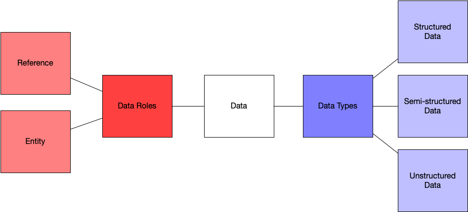

1 Data Stewardship Fundamentals
In this Chapter we will cover the following topics:
- Data Definitions
- Data Stewardship
- Data Governance
- Data Ethics
Data as a Relational Concept Successfully working with and offering services around data is often as much about domain knowledge (e.g. what do stakeholders of DOL know as experts) as it is about having a precise or clear language for describing data. To begin the curriculum, we will develop some working definitions of basic concepts - like data, and data stewardship. Having clarity on these basic concepts will allow us to not only communicate with others more effectively, but it will also allow us to quickly move from the basics to more advanced topics in this curriculum. ## Defining Data The Department of Licensing defines data as “Numbers and facts that have not been grouped or analyzed. (Data that is grouped becomes statistics. Data that is analyzed becomes data analysis.) This includes numbers and facts in electronic records, paper records, emails, text messages, recordings, and images.” (Policy Admin 1.7.7)
This working definition will be helpful in understanding what the Department of Licensing considers data and how it is to be successfully managed over time. This definition also draws a clear distinction between a type of information object (e.g. electronic records, paper records, text messages, etc) and the role that the information object is supposed to play (e.g. grouped numbers become statistical data, analyzed information objects become data analysis, etc). The point is that data need to have an application to become meaningful to a customer, but in the abstract data are really just information objects with potential for use in many different contexts.
It is often overwhelming to think of all the different ways that data may be used. Instead, I think it is more helpful to think about data as having type and role distinctions - A type is rigid (such as a format) and a role is fluid (it can change given a context). A simple example outside the context of data will help make this clear:
- Jay Inslee is a person. This is a type.
- Jay Inslee is the Governor of Washington State. This is a role. He will play this role for a fixed amount of time. After his term as governor expires he will cease to play this role. But, he will still be a person regardless of whether or not he is the Governor of Washington State.
Data have similar types and roles - A tabular dataset such as a CSV or Excel document will have a type of structure (rows, columns, and values). Unless we take some purposeful action to transform this data it will remain tabular as a type of data.
But, this tabular data (type) might be evidence of some real world example- it might be set of species occurrence records, the precipitation and temperature of a particular place, the number of vehicles that pass through a certain point at a certain time, or even a vehicle registration number. These are different roles that data can play. Without context these are just numbers or files (information objects) that are waiting to be used as evidence by a data stakeholder (such as the definition offered by DOL above).
This evidential role of data can shift and change depending on who is using the data, and for what purpose. Thinking about data as having roles and types helps us as data stewards to think about what exactly a stakeholder wants and needs. If we understand what role the data is supposed to play we can better find the right type of data for a customer or stakeholder.
1.1 Types: Structured vs Unstructured Data
Structure is often a helpful distinction in identifying types of data.
Structured data means that there is a predetermined form or logic to how information is arranged and presented to a user. A spreadsheet is an example of structured data - it has rows, columns and values This structure communicates to a user how the data values should be interpreted.
Unstructured data means that is no predetermined way in which data are supposed to be presented and used by a customer. Unstructured data for example can be emails, text messages, or other formal documents, videos or even audio recordings. As with much of data stewardship - real world data rarely falls exactly in one category or the other. Often data are semi-structured - which is when a set of data has a file format (such as XML or JSON) but no predefined form or scheme that explains for example what column of data should be. Below is a helpful figure - we can think about data as being structured or unstructured, as well as having semi-structures (such as XML or JSON). We will discuss these types of data as well metadata in the next section of the course.

Example 1
Throughout the first chapter of this book we’ve discussed the idea that data are fundamentally relational - they mean different things to different customers at different points in time. To understand this relational nature of data it can be helpful to look at an example of how the same data are displayed to customers in different settings. These settings drive the stewarship of data given the needs of a customer that may vary over time.
Below is a screenshot of the Washington Department of Transportation’s Traffic GeoData Portal. This map displays realtime traffic count data from routes and interstates throughout Washington.

This traffic map is interactive - it allows a customer to select a route, or even a point on a route, where data traffic is collected and see the realtime estimates of things like “How many single unit trucks are on this route in the last hour.” This view of the data is useful for getting a quick overview of what the state of traffic is at any one moment in time. But, lets assume that instead of a quick overview of the realtime data an analyst at DOL wants access to the data that is powering this visualiztion. They may want this data for a variety of reasons - they may want to map all of the single use trucks on the road for June 1st and determine what percentage of singule use trucks are licsensed in the state of the WA. The WSDOT traffic geodata portal allows us to view this data by selecting a polygon and “printing” the data. If we choose to do this then we get an easy to manipulate data table that looks like the following:
| Object ID | Route ID | Location | Direction of Travel | Single Unit Truck Percent | Double Unit Truck Percent | Triple Unit Truck Percent | 2019 AADT | Shape |
|---|---|---|---|---|---|---|---|---|
| 1220 | 410 | At Milepost 116.26 A: PERMANENT TRAFFIC RECORDER S818 WEST | Bothways | 9.87 | 2.14 | 0.06 | 2,100 | Point |
| 3624 | 12 | At Milepost 185.62 A: PERMANENT TRAFFIC RECORDER S818 EAST | Bothways | 4.93 | 4.31 | 1.38 | 4,500 | Point |
| 2005 | 12 | Before Milepost 185.44 A: RIGHT WYE CONNECTION SR 12 | Bothways | Null | Null | Null | 2,500 | Point |
| 3809 | 12 | At Milepost 185.25 A: PERMANENT TRAFFIC RECORDER S818 SOUTH | Bothways | 7.45 | 7.18 | 1.34 | 2,500 | Point |
| 2759 | 12 | After Milepost 185.48 A: RIGHT WYE CONNECTION SR 12 | Bothways | Null | Null | Null | 4,500 | Point |
| 4329 | 12 | From Milepost 188.65 A to Milepost 189.87 A | 5,700 | Polyline | ||||
| 2163 | 12 | From Milepost 185.48 A to Milepost 188.65 A | 4,500 | Polyline | ||||
| 2323 | 410 | From Milepost 114.40 A to Milepost 116.37 A | 2,100 | Polyline | ||||
| 4299 | 12 | From Milepost 178.86 A to Milepost 183.45 A | 2,300 | Polyline | ||||
| 1434 | 12 | From Milepost 183.45 A to Milepost 185.48 A | 2,500 | Polyline |
This table is much more informative and useful for analysis than a map. It gives us variables (such as Object ID, Route ID, Location). It also gives us observations of things like the number of single use trucks on Route 410 at milepost 116.2 on June 1st at 12:00pm.
Questions: 1. In the example above from WSDOT - is this entity data or reference data? 2. Is the map an example of structured, unstructured or semi-structured data? Why? 3. According to the DOL data categories, what kind of data is this table?